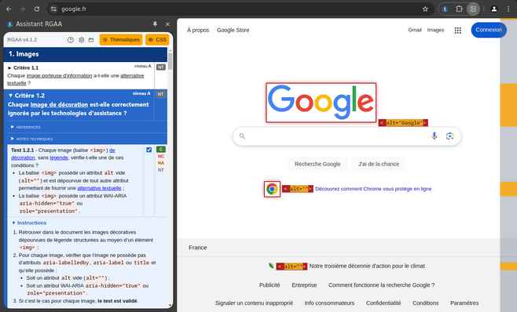
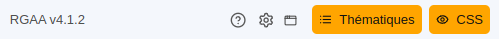

Comment ça fonctionne ?
Cette extension propose une liste complète des tests du référentiel RGAA. Pour chacun de ces tests, l'extension permet d'appliquer des modifications à la page courante (modifications de style, ajout d'informations, outils), permettant d'effectuer plus simplement les tests.
Interface
Menu principal
- Référentiel
- Affiche la version du référentiel utilisée. À l'heure actuelle, les versions 3 (2016 ou 2017), 4.0 (2019), 4.1 (2021) et 4.1.2 (2023) sont supportées.
- Popup
- Permet d'ouvrir l'extension dans une fenêtre séparée pour disposer de plus d'espace, par exemple sur deux moniteurs.
- Réinitialisation
- Désactive les tests en cours et réinitialise les résultats enregistrés.
- Options
- Options globales de l'extension, permettant notamment de configurer la version du référentiel à utiliser.
- Aide
- Vous y êtes !
- Thématiques
- Fournit un accès rapide aux thématiques du référentiel.
- Styles
- Ce bouton permet d'activer ou désactiver intégralement les styles de la page auditée, ce qui peut faciliter l'audit de certains tests.
Navigation
Sous chaque thème se trouve une liste de critères, qui peuvent être dépliés pour révéler la liste de tests qu'ils contiennent.
Tests
Pour chaque test, une case à cocher permet d'appliquer les modifications associées dans la page. Une fois cochée, les modifications s'appliquent, et les instructions à suivre pour valider le test s'affichent. Pour plus de détail, une zone "description du test" liste les modifications exactes apportées à la page.
Un résultat peut être assigné à chaque test pour suivre l'avancée de l'audit. Ces résultats sont agrégés automatiquement sur les critères parents.
Minimap
Lors de l'application d'un test, une petite carte s'affiche sur le côté de la page pour indiquer les zones affectées par le test. Elle permet de savoir rapidement si le test a affecté la page, et à quels endroits.
Cette carte représente l'ensemble de la page, et les zones en surbrillance les éléments mis en valeur.
Un clic sur un point de la carte permet de naviguer à la position correspondante dans la page.
Options
- Référentiel
- Permet de modifier la version du référentiel utilisée.
- Tests multiples
- Permet l'activation de plusieurs tests à la fois:, auquel cas leurs effets dans la page se cumulent
- Ouverture automatique des instructions
- Par défaut, les instructions d'un test s'ouvrent automatiquement lors de l'activation. On peut désactiver ce comportement pour alléger l'interface.
- Conservation de l'état
-
Permet de définir le comportemenent de l'extension
lors d'un changement de page ou d'onglet.
L'extension peut sauvegarder l'état courant (tests appliqués, résultats enregistrés), pour les réappliquer au changement de page ou d'onglet.
Outils
Analyseur de contraste
Cet outil permet de calculer le ratio de contraste entre 2 couleurs.
Pour chaque couleur, il est possible d'éditer
directement son code hexadécimal ou son nom (par exemple
#fff, #bada55,
green), ou de la sélectionner dans la page
de deux manières diférentes :
- Sélecteur de pixel
- Cliquez dessus, puis cliquez dans la page pour extraire la couleur du pixel sous le curseur.
- Sélecteur de texte
- Cliquez-dessus, puis sélectionnez une zone de texte dans la page pour extraire sa couleur.
Pour certains tests, vous trouverez également un bouton permettant d'extraire les deux couleurs d'un seul coup depuis une sélection de texte. Dans l'exemple ci-dessus, il extraira la couleur de texte et d'arrière-plan.
Hiérarchie de titres
Cet outil, utilisé dans le test 9.1.1, affiche la
hiérarchie de titres de la page. Chaque titre (balises
h1 à h6, ou élément avec
attribut aria-level) est listé ici dans
l'ordre d'apparition des éléments dans le DOM. Si une
erreur dans la hiérarchie est détectée, les titres
manquants et leur niveau sont affichés dans la liste.
Attention cependant, dans les version 4.0 et 4.1 du référentiel, la gestion des titres à été assouplie, de fait l'indication d'un titre manquant en rouge ou d'un "trou" dans le plan du document n'est pas nécessairement des contenus à considérer comme non-conforme (NC).
Validateur W3C
Le bouton "Validateur W3C" sert à valider le code source d'un site en ligne via validator.w3.org .
Le bouton "Validateur W3C (HTML local)" sert à valider
le code source d'un site non disponible en ligne (
http://localhost, intranet, site protégé
par .htaccess, etc).
Note : valider le code source d'un fichier (file://...
dans la barre d'adresse du navigateur) n'est pas
supporté.
Validateur de liens
Le bouton "Validateur de liens" sert à vérifier que les liens de la page courante sont fonctionnels via validator.w3.org/checklink .
Voir les sources
Le bouton "Voir les sources" affiche le code source de la page dans un nouvel onglet.
Télécharger l'extension


{kind=link}
L’histoire de l’assistant RGAA
Cet outil avait initialement été développé avec les ressources
accompagnant le RGAA 3 , pour un marché dont nous étions
cotitulaires pour le compte de la DINSIC (Direction
Interministérielle du Numérique et du Système d’Information et
de Communication), devenue DINUM (Direction Interministérielle
du Numérique).
Nous l’avions ensuite forké (reprise d’un code source existant
pour y apporter des modifications) pour intégrer la dernière
version du RGAA 3.
Et aujourd’hui ?
Aujourd’hui l'assistant est toujours maintenu et développé par nos équipes chez Boscop. Libre et open source, nous voulions faire de cet outil un bien commun pour faire avancer le sujet de l’accessibilité qui nous tient tant à cœur. L'assistant RGAA a d'ailleurs été approuvé par la DINUM !
Si vous souhaitez contribuer, nous accueillerons volontiers vos propositions d’améliorations, qu’elles soient d’ordre technique (pull requests) ou fonctionnel (issues).